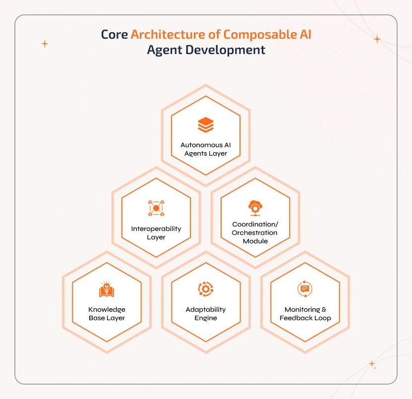
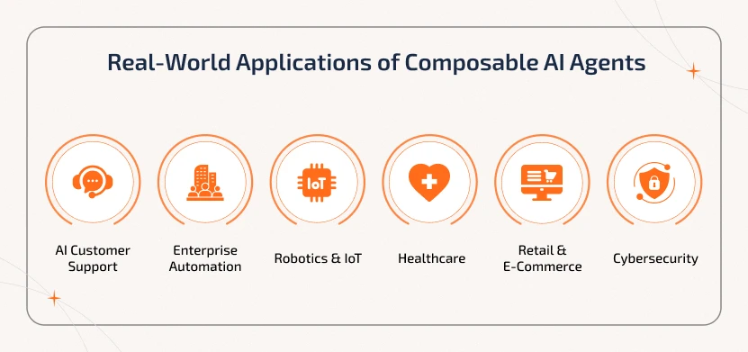
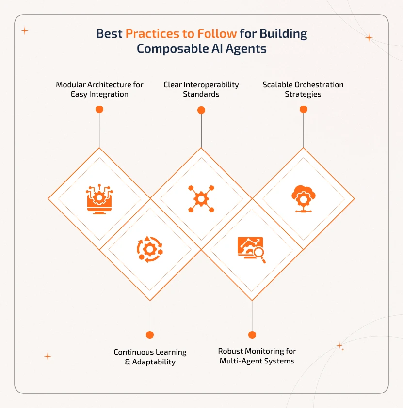
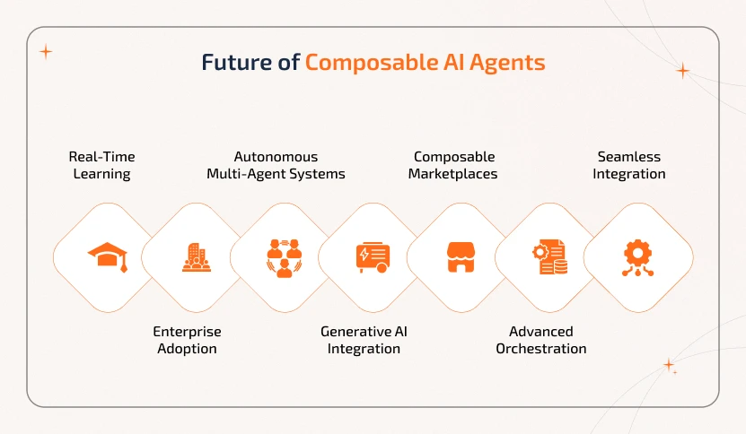

Artificial Intelligence is no longer about one-size-fits-all models. It is shifting towards Composable AI agents that offer developers and businesses the freedom to mix, match, and manage AI capabilities. These are modular & interoperable systems that let developers and organizations to quickly assemble, reconfigure, and orchestrate AI capabilities like building blocks.
Composable AI agents are the future of intelligent systems and are powered by agent-based architecture, multi-agent collaboration & AI agent orchestration. With the help of composable AI systems, businesses can adapt, scale, and innovate faster rather than working on a single-purpose solution.
Get into this blog to discover what composable AI agents are, how they differ from traditional AI, find the core architecture, key benefits, challenges in implementing, and the future trends driving their widespread adoption.
What Are Composable AI Agents?
Composable AI agents are nothing but a new way of building intelligent systems using the modular AI agents approach. i.e., this is unlike creating one big AI model that handles everything. Rather, these agents are designed like modular building blocks, and each agent has a specific function or skill that can be combined, reordered, or integrated with other agents based on the tasks. In other words, it is possible to mix and match agents to create a system that fits the exact needs of the business. This flexibility is what made them composable.
Composable AI agents work like parts of a well-connected ecosystem. As each agent has its own skills, they can fit into a larger system. Instead of building a new system from scratch every time, businesses can add new agents or refine the existing ones as needs evolve.
For example, when a company wants to expand to advanced predictive analytics, it can just add a new agent into the system without needing to redesign.
One of the key features of these agents is interoperability. Thus, different agents can talk to each other, share information, and work together even if they were meant to operate on different platforms. This can be better understood by
- One agent handling natural language understanding.
- Another might manage data analysis.
- A third one handling decision-making.
Put together, they are working to achieve a shared goal and form a cohesive AI system. Thus, they can handle more complex problems than a single agent can do on its own.
In other words, these Composable AI Agents operate as reusable components inside a scalable Composable AI Ecosystem.Another important concept is AI agent orchestration. i.e., each agent takes up a role, and orchestration ensures that all the agents work to complete the tasks efficiently.
Composable AI Agents Vs Traditional AI Agents
The graph of AI adoption is increasing, and as per PwC reports, about 79% of organizations reported using AI agents in some form. In that case, it is important to understand how traditional AI agents differ from the newer composable AI agents. While traditional models are rigid and work on their own, composable agents function just the opposite. i.e., they are flexible, interoperable, and built to work collaboratively for different tasks and domains.
Composable AI Agents fuel enterprise-wide scalability via a composable AI ecosystem.
| Feature | Traditional AI Agents | Composable AI Agents |
|---|---|---|
| Design Approach | Built as single-purpose systems | Follow a composable agent platform model |
| Flexibility | Harder to adapt to new tasks | Designed with reusability & flexibility |
| Collaboration | Limited interaction between agents | Support orchestration for cross-domain tasks |
| Scalability | Hard to expand or repurpose | Allows distributed AI agents to work in harmony across networks |
| Integration Ease | Difficult to integrate with other systems or agents | Interoperable by design & connects with other agents and platforms easily |
| Best Suited For | Narrow, isolated use cases | Multi-agent systems and enterprise-level AI workflows |
Build flexible, collaborative AI agents to streamline workflows & boost results.
Core Architecture of Composable AI Agent Development
Composable AI agents are built on a flexible and modular architecture. Thus, they can work independently while collaborating seamlessly within a larger system. The key components of composable agents include the following:

1. Autonomous AI Agents Layer
These are separate units
that come with specific skills or functions. Each agent is capable of performing
its tasks on its own. This includes analyzing data, understanding language,
making decisions, etc.
2. Interoperability Layer
This layer works as a bridge
between agents and allows them to communicate, exchange data, and integrate
seamlessly. The best part is, this layer lets the agents do all these tasks
irrespective of the platforms or purposes for which it was made.
3. Coordination/Orchestration Module
It is often
called the orchestration layer as it is responsible for organizing and
synchronizing multiple agents. Thus, this layer ensures the agents work together
efficiently to achieve a common goal without any conflicts.
4. Knowledge Base Layer
It is a shared repository in
which all the agents store and retrieve information. This layer helps agents
make informed decisions and maintain consistency across tasks.
5. Adaptability Engine
This engine allows the system
to automatically reconfigure itself. Thus, new agents can be added, existing
agents can be updated, and workflows can be adjusted as business needs or
environments change.
6. Monitoring & Feedback Loop
Some architectures
include a feedback mechanism that tracks the performance of the agents,
identifies bottlenecks, and provides continuous improvements over time.
Upon combining all these components, composable AI agents can work autonomously, collaborate intelligently, and adapt quickly. With this, the system becomes scalable, efficient, and capable of handling complex workflows. This architecture enables businesses to easily expand AI capabilities without needing to redesign the entire system.
Key Advantages of Composable AI Agents
The associated benefits of Composable AI agents make them valuable for both technical teams and business leaders. They include:
1. Flexible System Design
As each unit in composable
AI agents is built as a modular unit, businesses can easily replace, update, and
reconfigure individual agents without disturbing the entire system. This
modularity offers minimal downtime while accelerating upgrades and faster
adaptation to new technologies or requirements.
2. Scalable AI Ecosystems
Composable agents can be
easily expanded from a few specialized tasks to handle large-scale,
enterprise-wide multi-agent systems. Whether businesses need to manage workflows
for a small team or coordinate a multitude of processes across departments,
composable AI agents come with scalability by design.
3. Streamlined Efficiency
Composable AI agents
automate repetitive, complex tasks and thus open up the possibility to minimize
human effort, reduce errors, and accelerate faster time-to-value. With this,
resource usage is optimized, and decision-making becomes faster and better
across organizations.
4. Smooth Interoperability
With the interoperability
layer, it is possible for agents from different industries, domains, and vendors
to communicate effortlessly. Thus, integrating new AI tools, legacy systems, and
third-party services into existing systems becomes easy with composable AI.
5. Collaborative Intelligence
With multi-agent
collaboration, different agents work together, share knowledge, and solve
complex problems that otherwise would be a complex task for a single AI model.
This collaborative approach in Composable AI agents brings more accurate results
and stronger innovation.
6. Accelerated Innovation
With the composable
structure, it is possible to experiment with and adopt new AI agent design
patterns rapidly. Thus, organizations can test new agents, features, and models
to gain a competitive advantage without disrupting core systems.
7. Cost Optimization
Reusing modular agents not only
saves AI agent development time but also reduces the maintenance costs. Rather
than spending money on building an entire AI system, companies can opt to
upgrade or replace specific agents.
8. Faster Time-to-Market
Composable AI supports
businesses in quickly assembling prebuilt agents. As a result, AI development cycles are
reduced, and product launches or service rollouts can be completed faster.
9. Personalization & Continuous Learning
Agents can be
mixed and matched to industry-specific needs or based on user requirements. With
a shared knowledge base, agents exchange insights and learn collectively. This
makes the whole system more adaptable and smart over time.
Tech Stack Used in Building Composable AI Agents
Building composable AI agent platforms requires a well-structured technology stack. This ensures multi-agent collaboration and AI workflow automation. A typical tech stack includes:
1. Programming Language
Python, Java, and Rust are
used to build autonomous AI agents
2. AI & ML Frameworks
TensorFlow, PyTorch, and
LangChain are used to create cognitive AI agents and fine-tune models.
3. Agent Platforms
OpenAI Functions, AutoGen, and
custom composable agent platforms are used for orchestration.
4. Interoperability Layers
APIs, SDKs, and messaging
protocols are utilized to ensure AI agent interoperability.
5. Knowledge Repositories
Vector databases and graph
databases are used to store and share agent knowledge.
The above tech stack combination ensures that composable AI systems are not just adaptable but also modular and scalable across different enterprise environments.
How to Build Composable AI Agents - A Step-by-Step Guide
Businesses can choose a reliable AI agent development company to build a composable AI agent. They will create modular, flexible systems that can work alone or collaboratively with other agents for your business. The steps to build composable AI agents include:

Step 1: Define the Purpose
Decide on the tasks the
agent will perform. Define if it is going to work autonomously or as part of
multi-agent systems.
For instance, a voice AI agent that handles customer support or a predictive analytics agent handling finance.
Step 2: Design the AI Agent Architecture
This step
involves creating an AI agent architecture where updates,
replacements, and scaling operations can be done.
Step 3: Select the Tech Stack
Now, choose the right
tech stack for programming languages, AI and machine learning frameworks,
orchestration tools for workflow management, and databases for knowledge
sharing.
Step 4: Develop Autonomous Capabilities
This step
involves integrating cognitive AI agents to process data, reason, and make
decisions independently. For repetitive or complex tasks, AI workflow automation
can be implemented.
Step 5: Enable Multi-Agent Collaboration
Here, agents
will be designed to share knowledge and coordinate tasks. By using AI agent
orchestration, interaction between distributed AI agents can be managed
efficiently.
Step 6: Test, Optimize & Monitor
This step involves
tracking performance using metrics like task completion rate, error propagation,
etc. With continuously optimizing agents, it is possible to maintain
reliability, flexibility, and scalability.
Step 7: Integrate with Systems
The AI development
company will connect the agents with enterprise or third-party systems. This
enables smooth workflows across platforms.
Step 8: Deploy Gradually
Finally,
they will launch the composable AI agent in a controlled environment and then
scale up after monitoring performance to ensure everything runs smoothly.
Real-World Applications of Composable AI Agents
Composable AI agents are gradually being applied across industries to solve real-world problems efficiently. With multi-agent collaboration and AI workflow automation, organizations can easily deploy intelligent systems. Some of the practical applications are as follows:

1. AI Customer Support
Composable AI agents,
including voice AI agents, are used in customer service to
handle queries, manage escalations, and analyze customer sentiment in real-time.
This, in turn, improves response quality, reduces operational costs, and
optimizes staffing.
2. Enterprise Automation
These agents work
collaboratively to handle complex workflows, generate reports, and deliver
predictive analytics. This allows businesses to optimize operations and scale
efficiently.
3. Robotics & IoT
Distributed AI agents control smart
devices and robots together. As a team, these agents help in making decisions
automatically and working smoothly.
4. Healthcare
Composable AI agents in healthcare
analyze patient data, assist in diagnostics, coordinate treatment plans, and
optimize hospital workflows. This improves outcomes and operational efficiency.
5. Retail & E-Commerce
With multi-agent
collaboration, these agents work coordinatively to manage inventory, recommend
products, optimize pricing, and provide personalized customer experiences.
6. Cybersecurity
Distributed AI agents monitor
network activity, detect threats in real-time, and orchestrate automated
responses to prevent data breaches.
These real-world applications clearly show the role of composable AI agents in transforming traditional processes into adaptive, intelligent, and highly collaborative systems capable of solving complex problems in a dynamic world.
Transform workflows and boost efficiency with collaborative AI agents
Best Practices to Follow for Building Composable AI Agents
To get the fullest benefits, it is vital to build effective composable AI agents. And this requires following certain principles that ensure they are flexible, reliable, and scalable. Here are the things to be considered while building one:

1. Modular Architecture for Easy Integration
It is
vital to design each agent to be a self-contained module with a clearly defined
role. Modular design allows agents to be added, removed, and updated without
affecting the existing system. This makes integration and expansion easier.
2. Clear Interoperability Standards
Agents should
communicate and work together irrespective of whether they are developed
independently or by different teams. Following standard protocols, APIs, and
data formats ensures smooth collaboration across the ecosystem.
3. Scalable Orchestration Strategies
Enterprise AI
orchestration allows multiple agents to work collaboratively to achieve shared
goals. Scalable orchestration is all about the system handling small workflows
or expanding to enterprise-level multi-agent networks without performance issues
when needed.
4. Continuous Learning & Adaptability
Agents should
be crafted in such a way that they learn from new data and experiences both
individually and collectively. With continuous learning, systems will evolve
over time and adapt to changing business needs or environments.
5. Robust Monitoring for Multi-Agent Systems
Through
monitoring, it is possible to track agent performance, identify errors, and
ensure reliable operation. Thus, with strong monitoring frameworks, it is
possible to identify bottlenecks, optimize workflows, and maintain system
health.
Following these principles works for agent-based architecture, AI agent design patterns, and orchestration. This makes composable AI agents work effectively.
Rise of Multi-Agent Collaboration in AI
Multi-agent collaboration allows autonomous AI agents to share knowledge, coordinate tasks, and work together. This trend is driven by:
- Scalability - Multiple agents handle large-scale operations and complex datasets effectively.
- Flexibility - Composable AI agents can be added, updated, and replaced without disturbing workflows.
- Efficiency - They speed up AI workflow automation and reduce redundancies.
- Innovation - Collaboration opens up the possibility for new AI agent design patterns and creative problem-solving.
Industries like healthcare, finance, cybersecurity, and retail have started using multi-agent collaboration to automate workflows, improve decision-making, and optimize resources. This shift implies that the distributed AI agents work toward delivering intelligent and more adaptive solutions.
Composable AI Agent Performance & Evaluation Metrics
It is vital to measure the performance of composable AI agents to ensure they are operating efficiently and delivering expected outcomes. As agents work within a shared composable AI ecosystem, performance evaluation is used to find out the improvement opportunities and maintain system reliability.
Key metrics to track include:
- Task Completion Rate.
- Latency & Response Time.
- Accuracy & Decision Quality.
- Scalability & Load Handling.
- Interoperability Success.
- Resource Utilization.
In addition, AI observability tools help monitor how agents interact in real-time, find the issues, and prevent failures across the network. With a strong feedback loop, it is possible to optimize continuously and fine-tune without interrupting the workflows.
Those enterprises monitoring these performance can ensure the composable AI agents are accurate, scalable, and dependable whenever business needs evolve.
Security & Governance in Composable AI Agents
As composable AI agents work across different systems and networks, it is vital to use strong security and governance. This ensures they work safely and responsibly.
Adding security layers protects sensitive data, and thus, only the trusted agents can access or share the information. With governance, every action taken by an agent is monitored, compliant, and aligned with business standards.
Key security and governance practices include:
- Authentication & access control - This allows only approved agents to operate.
- Encryption - It safeguards data that is shared between the agents.
- Activity monitoring - Used to track decisions and actions in real-time.
- Lifecycle management - This is used to control how agents are deployed, updated, or removed.
Upon prioritizing these principles at an early stage, enterprises can confidently scale Composable AI Agents. The best part is these security practices help maintain trust, protect data, and ensure accountability across their entire Composable AI Ecosystem.
Challenges & Considerations of Composable AI Agents
Although there are many advantages that come with composable AI agents, they do come with unique challenges that organizations need to plan for:
1. Complex Orchestration
Collaborating with multiple
agents across an enterprise system can be complicated and resource-intensive. To
keep everything running smoothly, it is vital to plan properly, follow scalable
orchestration strategies, and automate workflow management.
2. Security Risks
Multiple AI agents often share data
across platforms and networks. This increases security risks and
vulnerabilities. With proper encryption techniques, authentication, and access
control, this can be overcome.
3. Interoperability Standards
Not all agents are built
the same way. A lack of common standards or protocols makes it difficult for
agents from different vendors and platforms to communicate or work together.
4. Performance Issues
As multiple agents work
together, synchronization and data exchange can slow down overall system
performance when not managed carefully. This can be avoided with efficient
monitoring and coordination.
5. Infrastructure Requirements
To
better handle multi-agent systems, it is vital to use strong computing
resources, cloud or edge infrastructure, and reliable networks. All these ensure
scalability and better system maintenance.
Future of Composable AI Agents
With industries adopting modular approaches, composable agents are becoming a central entity to build smarter and scalable ecosystems. The future of these agents includes:

1. Real-Time Learning - Agents will adapt and improve in real-time continuously and make decisions faster and smarter.
2. Enterprise Adoption - Composable platforms will optimize workflows and scale AI across different domains.
3. Autonomous Multi-Agent Systems - Agents will work together in real-time and handle complex tasks independently.
4. Generative AI Integration - They will create content, solutions, and insights autonomously.
5. Composable Marketplaces - With plug-and-play, agents will improve the adoption and innovation rate.
6. Advanced Orchestration - Offers efficient coordination of multiple agents in dynamic workflows.
7. Seamless Integration - Agents will connect across systems to solve large-scale problems globally.
Conclusion
Composable AI agents are one of the innovations that transform the way we build and deploy intelligent systems. They are opening up the doors to new levels of automation, innovation, and interoperability. As the trend continues, the role of composable AI agents will become a key part of enterprise AI strategies and the next generation of autonomous AI agents.